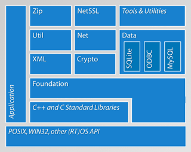

The POCO C++ Libraries are a collection of open source C++ class libraries that simplify and accelerate the development of network-centric, portable applications in C++. The libraries integrate perfectly with the C++ Standard Library and fill many of the functional gaps left open by it. Their modular and efficient design and implementation makes the POCO C++ Libraries extremely well suited for embedded development, an area where the C++ programming language is becoming increasingly popular, due to its suitability for both low-level (device I/O, interrupt handlers, etc.) and high-level object-oriented development. Of course, POCO is also ready for enterprise-level challenges.

POCO consists of four core libraries, and a number of add-on libraries. The core libraries are Foundation, XML, Util and Net. Two of the add-on libraries are NetSSL, providing SSL support for the network classes in the Net library, and Data, a library for uniformly accessing different SQL databases. POCO aims to be for network-centric, cross-platform C++ software development what Apple's Cocoa is for Mac development, or Ruby on Rails is for Web development — a powerful, yet easy and fun to use platform to build your applications upon. POCO is built strictly using standard ANSI/ISO C++, including the standard library. The contributors attempt to find a good balance between using advanced C++ features and keeping the classes comprehensible and the code clean, consistent and easy to maintain.
The Foundation library makes up the heart of POCO. It contains the underlying platform abstraction layer, as well as frequently used utility classes and functions. The Foundation library contains types for fixed-size integers, functions for converting integers between byte orders, an Poco::Any class (based on boost::Any), utilities for error handling and debugging, including various exception classes and support for assertions. Also available are a number of classes for memory management, including reference counting based smart pointers, as well as classes for buffer management and memory pools. For string handling, POCO contains a number of functions that among other things, trim strings, perform case insensitive comparisons and case conversions. Basic support for Unicode text is also available in the form of classes that convert text between different character encodings, including UTF-8 and UTF-16. Support for formatting and parsing numbers is there, including a typesafe variant of sprintf. Regular expressions based on the well-known PCRE library (http://www.pcre.org) are provided as well.
POCO gives you classes for handling dates and times in various variants. For accessing the file system, POCO has Poco::File and Poco::Path classes, as well as a Poco::DirectoryIterator class. In many applications, some parts of the application need to tell other parts that something has happened. In POCO, Poco::NotificationCenter, Poco::NotificationQueue and events (similar to C# events) make this easy. The following example shows how POCO events can be used. In this example, class Source has a public event named theEvent, having an argument of type int. Subscribers can subscribe by calling operator += and unsubscribe by calling operator -=, passing a pointer to an object and a pointer to a member function. The event can be fired by calling operator (), as its done in Source::fireEvent().
#include "Poco/BasicEvent.h"
#include "Poco/Delegate.h"
#include <iostream>
using Poco::BasicEvent;
using Poco::Delegate;
class Source
{
public:
BasicEvent<int> theEvent;
void fireEvent(int n)
{
theEvent(this, n);
}
};
class Target
{
public:
void onEvent(const void* pSender, int& arg)
{
std::cout << "onEvent: " << arg << std::endl;
}
};
int main(int argc, char** argv)
{
Source source;
Target target;
source.theEvent += Delegate<Target, int>(
&target, &Target::onEvent);
source.fireEvent(42);
source.theEvent -= Delegate<Target, int>(
&target, &Target::onEvent);
return 0;
}
The stream classes available in POCO have already been mentioned. These are augmented by Poco::BinaryReader and Poco::BinaryWriter for writing binary data to streams, automatically and transparently handling byte order issues.
In complex multithreaded applications, the only way to find problems or bugs is by writing extensive logging information. POCO provides a powerful and extensible logging framework that supports filtering, routing to different channels, and formatting of log messages. Log messages can be written to the console, a file, the Windows Event Log, the Unix syslog daemon, or to the network. If the channels provided by POCO are not sufficient, it is easy to extend the logging framework with new classes.
For loading (and unloading) shared libraries at runtime, POCO has a low-level Poco::SharedLibrary class. Based on it is the Poco::ClassLoader class template and supporting framework, allowing dynamic loading and unloading of C++ classes at runtime, similar to what's available to Java and .NET developers. The class loader framework also makes it a breeze to implement plug-in support for applications in a platform-independent way.
Finally, POCO Foundation contains multithreading abstractions at different levels. Starting with a Poco::Thread class and the usual synchronization primitives (Poco::Mutex, Poco::ScopedLock, Poco::Event, Poco::Semaphore, Poco::RWLock), a Poco::ThreadPool class and support for thread-local storage, also high level abstractions like active objects are available. Simply speaking, an active object is an object that has methods executing in their own thread. This makes asynchronous member function calls possible — call a member function, while the function executes, do a bunch of other things, and, eventually, obtain the function's return value. The following example shows how this is done in POCO. The ActiveAdder class in defines an active method add(), implemented by the addImpl() member function. Invoking the active method in main() yields an Poco::ActiveResult (also known as a future), that eventually receives the function's return value.
#include "Poco/ActiveMethod.h"
#include "Poco/ActiveResult.h"
#include <utility>
#include <iostream>
using Poco::ActiveMethod;
using Poco::ActiveResult;
class ActiveAdder
{
public:
ActiveAdder(): add(this, &ActiveAdder::addImpl)
{
}
ActiveMethod<int, std::pair<int, int>, ActiveAdder> add;
private:
int addImpl(const std::pair<int, int>& args)
{
return args.first + args.second;
}
};
int main(int argc, char** argv)
{
ActiveAdder adder;
ActiveResult<int> sum = adder.add(std::make_pair(1, 2));
// do other things
sum.wait();
std::cout << sum.data() << std::endl;
return 0;
}
The POCO XML library provides support for reading, processing and writing XML. Following one's of POCO's guiding principles — don't try to reinvent things that already work — POCO's XML library supports the industry-standard SAX (version 2) and DOM interfaces, familiar to many developers with XML experience. SAX, the Simple API for XML (http://www.saxproject.org), defines an event-based interface for reading XML. A SAX-based XML parser reads through the XML document and notifies the application whenever it encounters an element, character data, or other XML artifact. A SAX parser does not need to load the complete XML document into memory, so it can be used to parse huge XML files efficiently. In contrast, DOM (Document Object Model, http://www.w3.org/DOM/) gives the application complete access to an XML document, using a tree-style object hierarchy. For this to work, the DOM parser provided by POCO has to load the entire document into memory. To reduce the memory footprint of the DOM document, the POCO DOM implementation uses string pooling, storing frequently occuring strings such as element and attribute names only once. The XML library is based on the Expat open source XML parser library (http://www.libexpat.org). Built on top of Expat are the SAX interfaces, and built on top of the SAX interfaces is the DOM implementation. For strings, the XML library uses std::string, with characters encoded in UTF-8. This makes interfacing the XML library to other parts of the application easy. Support for XPath and XSLT will be available in a future release.
The Util library has a somewhat misleading name, as it basically contains a framework for creating command-line and server applications. Included is support for handling command line arguments (validation, binding to configuration properties, etc.) and managing configuration information. Different configuration file formats are supported — Windows-style INI files, Java-style property files, XML files and the Windows registry.
For server applications, the framework provides transparent support for Windows services and Unix daemons. Every server application can be registered and run as a Windows service, with no extra code required. Of course, all server applications can still be executed from the command line, which makes testing and debugging easier.
POCO's Net library makes it easy to write network-based applications. No matter whether your application simply needs to send data over a plain TCP socket, or whether your application needs a full-fledged built-in HTTP server, you will find something useful in the Net library.
At the lowest level, the Net library contains socket classes, supporting TCP stream and server sockets, UDP sockets, multicast sockets, ICMP and raw sockets. If your application needs secure sockets, these are available in the NetSSL library, implemented using OpenSSL (http://www.openssl.org). Based on the socket classes are two frameworks for building TCP servers — one for multithreaded servers (one thread per connection, taken from a thread pool), one for servers based on the Acceptor-Reactor pattern. The multithreaded Poco::Net::TCPServer class and its supporting framework are also the foundation for POCO's HTTP server implementation (Poco::Net::HTTPServer). On the client side, the Net library provides classes for talking to HTTP servers, for sending and receiving files using the FTP protocol, for sending mail messages (including attachments) using SMTP and for receiving mail from a POP3 server.
The following example shows the implementation of a simple HTTP server using the POCO libraries. The server returns a HTML document showing the current date and time. The application framework is used to build a server application that can run as a Windows service, or Unix daemon process. Of course, the same executable can also directly be started from the shell. For use with the HTTP server framework, a TimeRequestHandler class is defined that servers incoming requests by returning a HTML document containing the current date and time. Also, for each incoming request, a message is logged using the logging framework. Together with the TimeRequestHandler class, a corresponding factory class, TimeRequestHandlerFactory is needed; an instance of the factory is passed to the HTTP server object. The HTTPTimeServer application class defines a command line argument help by overriding the defineOptions() member function of Poco::Util::ServerApplication. It also reads in the default application configuration file (in initialize()) and obtains the value of some configuration properties in main(), before starting the HTTP server.
#include "Poco/Net/HTTPServer.h"
#include "Poco/Net/HTTPRequestHandler.h"
#include "Poco/Net/HTTPRequestHandlerFactory.h"
#include "Poco/Net/HTTPServerParams.h"
#include "Poco/Net/HTTPServerRequest.h"
#include "Poco/Net/HTTPServerResponse.h"
#include "Poco/Net/HTTPServerParams.h"
#include "Poco/Net/ServerSocket.h"
#include "Poco/Timestamp.h"
#include "Poco/DateTimeFormatter.h"
#include "Poco/DateTimeFormat.h"
#include "Poco/Exception.h"
#include "Poco/ThreadPool.h"
#include "Poco/Util/ServerApplication.h"
#include "Poco/Util/Option.h"
#include "Poco/Util/OptionSet.h"
#include "Poco/Util/HelpFormatter.h"
#include <iostream>
using Poco::Net::ServerSocket;
using Poco::Net::HTTPRequestHandler;
using Poco::Net::HTTPRequestHandlerFactory;
using Poco::Net::HTTPServer;
using Poco::Net::HTTPServerRequest;
using Poco::Net::HTTPServerResponse;
using Poco::Net::HTTPServerParams;
using Poco::Timestamp;
using Poco::DateTimeFormatter;
using Poco::DateTimeFormat;
using Poco::ThreadPool;
using Poco::Util::ServerApplication;
using Poco::Util::Application;
using Poco::Util::Option;
using Poco::Util::OptionSet;
using Poco::Util::OptionCallback
using Poco::Util::HelpFormatter;
class TimeRequestHandler: public HTTPRequestHandler
{
public:
TimeRequestHandler(const std::string& format): _format(format)
{
}
void handleRequest(HTTPServerRequest& request,
HTTPServerResponse& response)
{
Application& app = Application::instance();
app.logger().information("Request from "
+ request.clientAddress().toString());
Timestamp now;
std::string dt(DateTimeFormatter::format(now, _format));
response.setChunkedTransferEncoding(true);
response.setContentType("text/html");
std::ostream& ostr = response.send();
ostr << "<html><head><title>HTTPTimeServer powered by "
"POCO C++ Libraries</title>";
ostr << "<meta http-equiv=\"refresh\" content=\"1\"></head>";
ostr << "<body><p style=\"text-align: center; "
"font-size: 48px;\">";
ostr << dt;
ostr << "</p></body></html>";
}
private:
std::string _format;
};
class TimeRequestHandlerFactory: public HTTPRequestHandlerFactory
{
public:
TimeRequestHandlerFactory(const std::string& format):
_format(format)
{
}
HTTPRequestHandler* createRequestHandler(
const HTTPServerRequest& request)
{
if (request.getURI() == "/")
return new TimeRequestHandler(_format);
else
return 0;
}
private:
std::string _format;
};
class HTTPTimeServer: public Poco::Util::ServerApplication
{
public:
HTTPTimeServer(): _helpRequested(false)
{
}
~HTTPTimeServer()
{
}
protected:
void initialize(Application& self)
{
loadConfiguration();
ServerApplication::initialize(self);
}
void uninitialize()
{
ServerApplication::uninitialize();
}
void defineOptions(OptionSet& options)
{
ServerApplication::defineOptions(options);
options.addOption(
Option("help", "h", "display argument help information")
.required(false)
.repeatable(false)
.callback(OptionCallback<HTTPTimeServer>(
this, &HTTPTimeServer::handleHelp)));
}
void handleHelp(const std::string& name,
const std::string& value)
{
HelpFormatter helpFormatter(options());
helpFormatter.setCommand(commandName());
helpFormatter.setUsage("OPTIONS");
helpFormatter.setHeader(
"A web server that serves the current date and time.");
helpFormatter.format(std::cout);
stopOptionsProcessing();
_helpRequested = true;
}
int main(const std::vector<std::string>& args)
{
if (!_helpRequested)
{
unsigned short port = (unsigned short)
config().getInt("HTTPTimeServer.port", 9980);
std::string format(
config().getString("HTTPTimeServer.format",
DateTimeFormat::SORTABLE_FORMAT));
ServerSocket svs(port);
HTTPServer srv(new TimeRequestHandlerFactory(format),
svs, new HTTPServerParams);
srv.start();
waitForTerminationRequest();
srv.stop();
}
return Application::EXIT_OK;
}
private:
bool _helpRequested;
};
int main(int argc, char** argv)
{
HTTPTimeServer app;
return app.run(argc, argv);
}